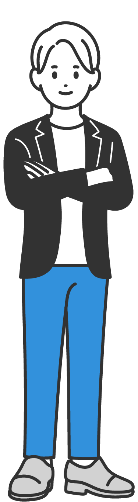
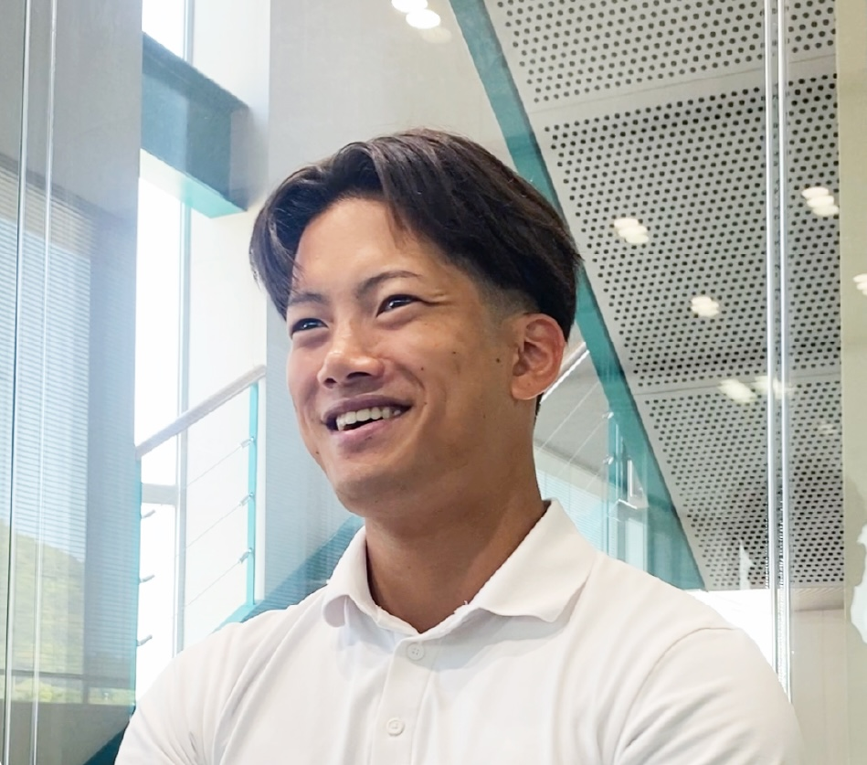

いつか、社長になる。

小郡営業所
2026年入社（新卒）
建材営業
S.Sさん

インタビュー
仕事内容
建築資材の営業を担当しており、
メーカーや工務店への営業活動を行っている。
入社の経緯や決め手
ある意味地元の影響力
入社のきっかけは、課長が友人のお父さんだったことである。声をかけていただき、三和への入社につながった。
就職活動当時は営業職へのこだわりもなく、やりたいことも特に決まっていなかった。地元は山口県であり、広島の大学に通っていたが、友人にも山口県内へ就職する人が多かったため、「それなら自分も山口で働こう」と考えたことが入社の決め手となった。
入社後に感じた印象やギャップ
入社前のフレンドリーな印象が
ずっとそのまま変わらない
入社前には飲み会があり、社員の方々がフレンドリーで話しやすいという印象を持っていた。
入社後もその印象は変わらなかった。上司との距離も近く、良い意味でギャップはなかった。みんなフレンドリーで話しやすく、同じことを何回質問しても丁寧に教えてくれる。また、誰に質問しても全員が優しく対応してくれるため、とても働きやすい環境だと感じている。
仕事のおもしろさややりがい
内と外での
ワークバランスが心地よい
もともとパソコン作業はあまり得意ではない。しかし、この仕事はパソコン作業とお客様との対面での仕事が半々程度であり、バランスが良いと感じている。
例えば、午前中は見積もり作成などの業務を行い、午後からは取引先の方との打ち合わせに出向くこともある。デスクワークだけでなく、人と関わる仕事も多いため、自分に合っていると感じている。
働き方について
研修制度があるから
未経験でも安心して働ける
2026年度から本格的な新人研修が始まったため、基礎を教わってから現場に出ることができる。
最初は座学で学び、その後実際に現場を見に行く研修がある。座学だけでは頭に入りにくいことも多いため、実際の現場を見ることができるのは非常に良い経験になっている。
2027年1月頃からは先輩社員の仕事を引き継ぎ、本格的に独り立ちする予定である。見積もり作成なども丁寧に教えていただけるため、何とかやっていけると思っている。先輩たちも同じように経験を積みながら成長してきたため、自分も何とかなると思っている。また、お客様との距離が近いことも働きやすさにつながっている。
学生時代の経験で現在活かされていること
競争で培った強さは
仕事で活きる
スポーツや留学の経験である。スポーツを通して競争することに慣れた。また、仕事の中で文句を言われたり厳しい言葉を受けたりすることがあっても、スポーツを通して精神的に鍛えられていたため、落ち込まずに対応できていると感じている。
就活生へのアドバイス
特にない
○○○○○○○○○○○○○○○○○○○○○。
今後のビジョンやキャリアプラン
社長になる
将来的には社長になりたいと考えている。志は高く持っていたい。就職面接の際に社長から「社長になりたいか」と聞かれたことがあり、その時は「そりゃなりたい」と感じた。
現在も社長と話す機会があるが、今の段階では自分が社長になれそうだと感じることはまだない。ただ、この会社であれば長く続けられそうだと感じている。仕事が嫌にならないことに加え、人柄の良い社員が多いからである。
また、残業がほとんどなく、17時には帰宅できるため、働きやすい環境だと感じている。
休日の過ごし方
仕事も休日も
人とのつながりを大切に
休日は飲み会やゴルフ、サーフィンを楽しんでいる。
また、特に仲の良いお客様とのゴルフや飲み会に参加することもあり、仕事以外の場でも交流を深めている。
山口県の魅力
自然と利便性
その両方がそろう山口県
都会へ行ったとしても、実際に遊ぶ内容はそれほど変わらないと感じている。
山口県は自然が豊かで過ごしやすく、福岡や広島へも2時間以内で行くことができる。田舎ならではの暮らしやすさと利便性を兼ね備えている点が魅力である。
就活生へのメッセージ
人の良さが三和の魅力
会社は実際に入ってみないと分からないことが多いと思う。
三和は仕事内容も楽しいが、長く働き続けることを考えると、一緒に働く人の人柄や職場環境が非常に大切だと感じている。その点で、三和は人柄の良い社員が多く、とても居心地の良い会社である。
タイムスケジュール
| 08:00 | 出社 |
|---|---|
| 08:00 ～ 10:00 | ○○○○○○○○○○○○○○○○○○○○○○○ |
| 10:00 ～ 12:00 | ○○○○○○○○○○○○○○○○○○○○○ |
| 12:00 ～ 13:00 | 昼食 |
| 13:00 ～ 14:00 | ○○○○○○○○○○○○○○○○○○○○○ |
| 14:00 ～ 16:00 | ○○○○○○○○○○○○○○○○○○○○○ |
| 16:00 ～ 17:00 | ○○○○○○○○○○○○○○○○○○○○○ |
| 17:00 | 退社 |